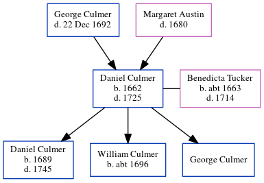

Daniel Culmer 1662 - 1725
[ Home ] | [ Calendar ] | [ Surnames Index ] | [ Errors ] | [ Family History ]The child of George Culmer and Margaret Austin, Daniel Culmer, the 8 times great-grandfather of Nigel Horne, was born in Preston, Kent, England in 1662 and married Benedicta Tucker (with whom he had 3 children: Daniel, William and George) in Preston on 19 Sept 1683.
He died in 17251 and was buried in Stourmouth, Kent, England on 25 Jan 17251,2.
Parents
Children
- Daniel was born in 1689
- William was born c. 1696
Citations
- Kent, England, Tyler Index to Parish Registers, 1538-1874 Online publication - Provo, UT, USA: Ancestry.com Operations, Inc., 2010. This collection was indexed by Ancestry World Archives Project contributors.Original data - Frank Watt Tyler. The Tyler Collection. Canterbury, Kent, England: The Institute of Herald
- Kent, Canterbury Archdeaconry Burials - Findmypast
Media
Kent, Canterbury Archdeaconry burials - GBPRS/CANT/D/95509447
Family Tree
Map
Generated by ged2site. Last updated on Jul 3, 2024
Known Issues
Birth date (1662) has no citations
Marriage date (19 Sep 1683) has no citations
Date of death is known, but not place